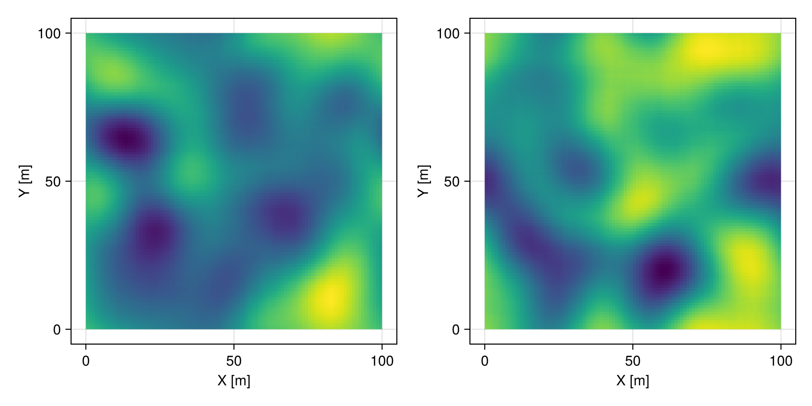
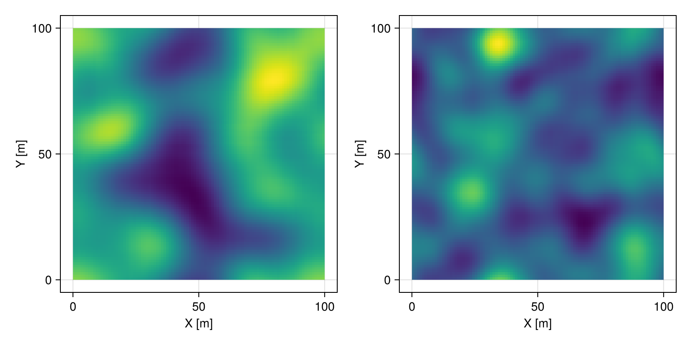
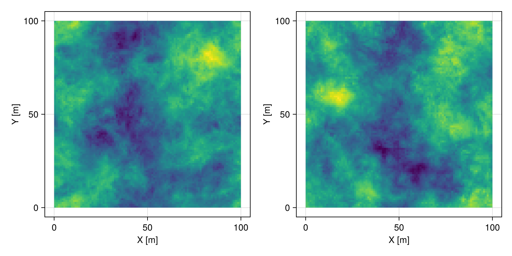
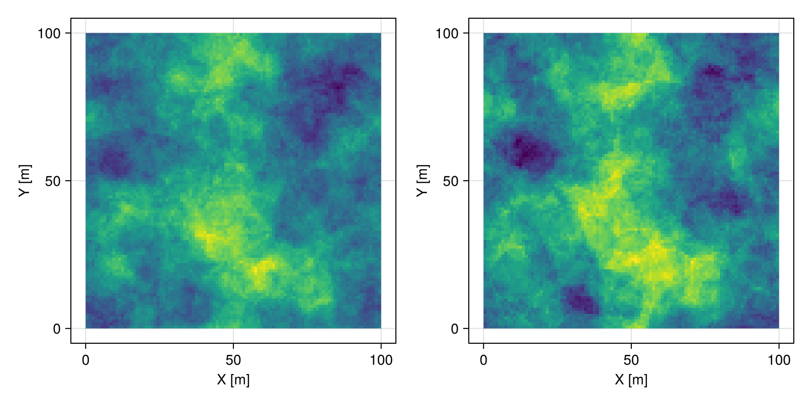
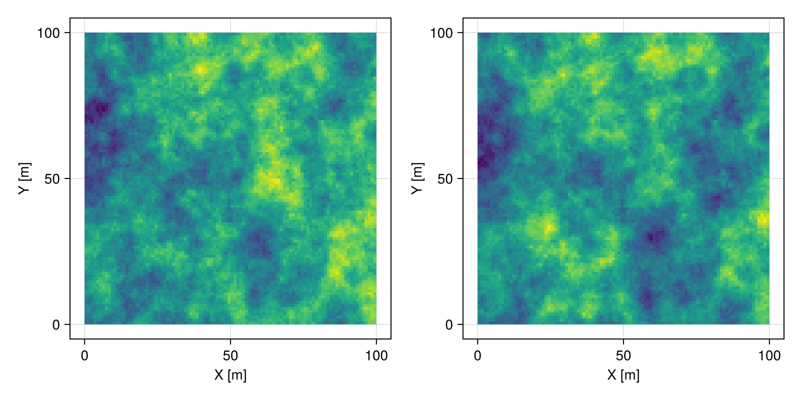
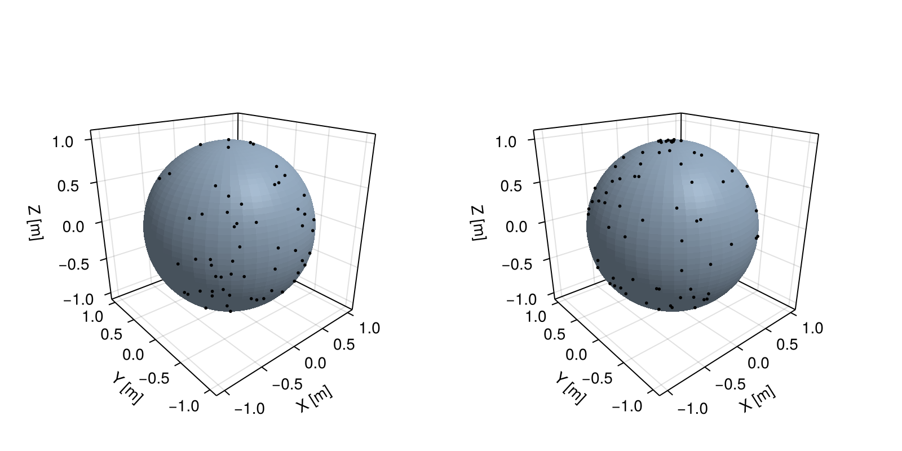
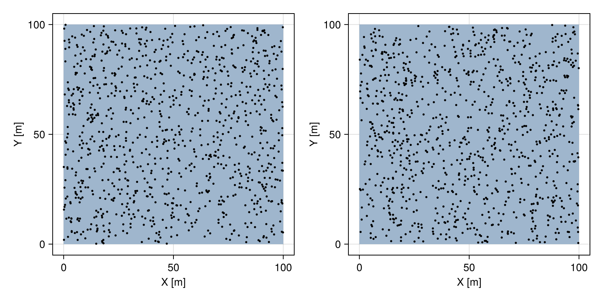
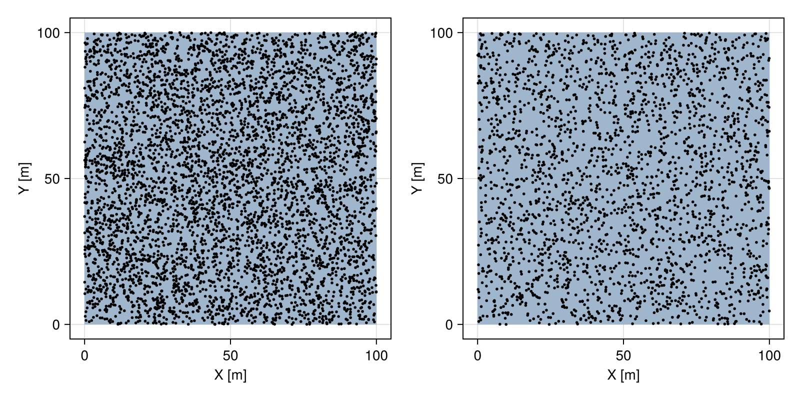
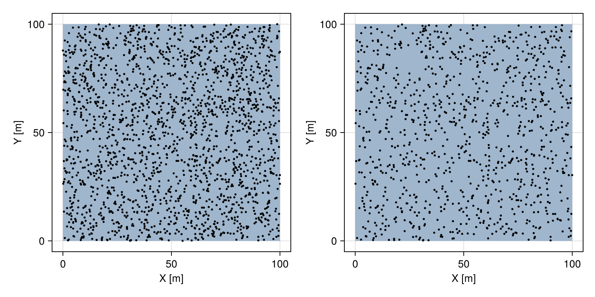

Simulation
Overview
Geostatistical simulation is a powerful alternative to geostatistical interpolation. Instead of a single smooth map, geostatistical simulation can produce hundreds of alternative maps (a.k.a. realizations) that resemble natural phenomena.
In the following sections, we assume some basic understanding of geospatial random processes. For the purposes of this documentation, we divide these processes into processes over a known (and fixed) domain, that we call field processes, and processes that simulate the domain itself, where the most prominent example are point processes.
Field processes
GeoStatsProcesses.FieldProcess — Type
FieldProcess <: GeoStatsProcessA field process (or random field) is defined over a fixed geospatial domain. The realizations of the process are stored in an ensemble, which is an indexable collection of geotables.
Base.rand — Method
rand([rng], process::FieldProcess, domain, [n];
data=nothing, method=nothing, init=NearestInit(),
workers=workers(), async=false, showprogress=true)Simulate n random realizations of the field process over the geospatial domain, using the random number generator rng. If a geotable is provided as data, perform conditional simulation, ensuring that all realizations match the data values.
The number of realizations n can be omitted, in which case the result is a single geotable. If n is provided, the result becomes an ensemble with multiple realizations.
Some processes like the GaussianProcess can be simulated with alternative simulation methods from the literature such as LUSIM, SEQSIM and FFTSIM. Other processes can only be simulated with a default method. A suitable method is automatically chosen based on the process, domain and data.
In the presence of data, the realizations are initialized with a initialization method. By default, the data is assigned to the nearest geometry of the simulation domain.
Multiple workers created with the Distributed standard library can be used for parallel simulation. The function can be called asynchrounously, in which case it returns immediately for online consumption of realizations in a loop. The option showprogress can be used to show a progress bar with estimated time of conclusion.
Examples
rand(process, domain) # single realization as geotable
rand(process, domain, data=data) # conditional simulation
rand(process, domain, 3) # ensemble of realizations
rand(process, domain, 10, data=data) # ensemble of realizations
rand(rng, process, domain, 3) # specify random number generatorNotes
If you are not an expert in random fields, avoid setting the method manually. There are good heuristics in place to maximize performance in any given setup.
Realizations of a field process are efficiently stored in an Ensemble. For most purposes, an ensemble is an indexable collection of geotables together with a few summary statistics that can be used quantify uncertainty (e.g., mean, var, cdf, quantile).
The simulation of field processes can be performed without a geotable in an unconditional simulation. If a geotable is provided, the observed values are honored in a conditional simulation.
We illustrate these concepts with the GaussianProcess:
# domain of simulation
grid = CartesianGrid(100, 100)
# field process
proc = GaussianProcess(GaussianVariogram(range=30.0))
# perform simulation
real = rand(proc, grid, 100)2D Ensemble
domain: 100×100 CartesianGrid
variables: field
N° reals: 100The first two realizations of the process are shown below:
fig = Mke.Figure(size = (800, 400))
viz(fig[1,1], real[1].geometry, color = real[1].field)
viz(fig[1,2], real[2].geometry, color = real[2].field)
fig
Likewise, we can show the mean and variance of the ensemble:
m, v = mean(real), var(real)
fig = Mke.Figure(size = (800, 400))
viz(fig[1,1], m.geometry, color = m.field)
viz(fig[1,2], v.geometry, color = v.field)
fig
the 25th and 75th percentiles:
q25 = quantile(real, 0.25)
q75 = quantile(real, 0.75)
fig = Mke.Figure(size = (800, 400))
viz(fig[1,1], q25.geometry, color = q25.field)
viz(fig[1,2], q75.geometry, color = q75.field)
fig
or the cummulative distribution:
p25 = cdf(real, 0.25)
p75 = cdf(real, 0.75)
fig = Mke.Figure(size = (800, 400))
viz(fig[1,1], p25.geometry, color = p25.field)
viz(fig[1,2], p75.geometry, color = p75.field)
fig
Some field processes like GaussianProcess and LindgrenProcess have efficient expectedvalue implementations. Please check this page for more examples.
Parallel simulation
All field processes support distributed parallel simulation with multiple Julia worker processes. Doing so requires using the Distributed standard library, like in the following example:
using Distributed
# request additional processes
addprocs(3)
# load code on every single process
@everywhere using GeoStats
# setup simulation
grid = CartesianGrid(100, 100)
proc = GaussianProcess(GaussianVariogram(range=30.0))
# perform simulation on all worker processes
real = rand(proc, grid, 3, workers = workers())Please consult The ultimate guide to distributed computing in Julia.
Multivariate simulation
Some field processes like the GaussianProcess support multivariate simulation (a.k.a. cosimulation). The multivariate setting is automatically detected in the presence of multivariate geostatistical functions.
In the example below, we simulate two variables jointly with a correlation coefficient of 0.8:
# multivariate covariance function
func = [1.0 0.8; 0.8 1.0] * SphericalCovariance(range=30.0)
# multivariate Gaussian process
proc = GaussianProcess(func)
# simulate 2 variables jointly
real = rand(proc, grid)
# visualize variables side by side
fig = Mke.Figure(size = (800, 400))
viz(fig[1,1], real.geometry, color = real.field1)
viz(fig[1,2], real.geometry, color = real.field2)
fig
Point processes
GeoStatsProcesses.PointProcess — Type
PointProcess <: GeoStatsProcessParent type of all point processes.
Base.rand — Method
rand([rng], process::PointProcess, geometry, [n])
rand([rng], process::PointProcess, domain, [n])Simulate n realizations of the point process inside geometry or domain using the random number generator rng.
The number of realizations n can be omitted, in which case the result is a single point set. If n is provided, the result becomes a vector with multiple realizations.
We can use a point process to simulate random locations of events within a given geometry of interest. When the process ishomogeneous, it is relatively easy to perform the simulation. The framework also provides non-homogeneous point processes over different types of geometries.
GeoStatsProcesses.ishomogeneous — Function
ishomogeneous(process::PointProcess)Tells whether or not the point process is homogeneous.
The following example illustrates the simulation of a homogeneous PoissonProcess process over a sphere:
# geometry of interest
sphere = Sphere((0, 0, 0), 1)
# homogeneous Poisson process
proc = PoissonProcess(5.0)
# sample two point patterns
pset = rand(proc, sphere, 2)
fig = Mke.Figure(size = (800, 400))
viz(fig[1,1], sphere)
viz!(fig[1,1], pset[1], color = :black)
viz(fig[1,2], sphere)
viz!(fig[1,2], pset[2], color = :black)
fig
Please check this page for more examples.
Basic operations
Point processes can be combined using basic operations.
Base.union — Method
p₁ ∪ p₂Return the union of point processes p₁ and p₂.
# geometry of interest
box = Box((0, 0), (100, 100))
# superposition of two Binomial processes
proc₁ = BinomialProcess(500)
proc₂ = BinomialProcess(500)
proc = proc₁ ∪ proc₂ # 1000 points
pset = rand(proc, box, 2)
fig = Mke.Figure(size = (800, 400))
viz(fig[1,1], box)
viz!(fig[1,1], pset[1], color = :black)
viz(fig[1,2], box)
viz!(fig[1,2], pset[2], color = :black)
fig
GeoStatsProcesses.thin — Function
thin(process, method)Thin point process with thinning method.
GeoStatsProcesses.RandomThinning — Type
RandomThinning(p)Random thinning with retention probability p, which can be a constant probability value in [0,1] or a function mapping a point to a probability.
Examples
RandomThinning(0.5)
RandomThinning(p -> sum(to(p)))# geometry of interest
box = Box((0, 0), (100, 100))
# reduce intensity of Poisson process by half
proc₁ = PoissonProcess(0.5)
proc₂ = thin(proc₁, RandomThinning(0.5))
# sample point patterns
pset₁ = rand(proc₁, box)
pset₂ = rand(proc₂, box)
fig = Mke.Figure(size = (800, 400))
viz(fig[1,1], box)
viz!(fig[1,1], pset₁, color = :black)
viz(fig[1,2], box)
viz!(fig[1,2], pset₂, color = :black)
fig
# geometry of interest
box = Box((0, 0), (100, 100))
# Binomial process
proc = BinomialProcess(2000)
# sample point pattern
pset₁ = rand(proc, box)
# thin point pattern with probability 0.5
pset₂ = thin(pset₁, RandomThinning(0.5))
fig = Mke.Figure(size = (800, 400))
viz(fig[1,1], box)
viz!(fig[1,1], pset₁, color = :black)
viz(fig[1,2], box)
viz!(fig[1,2], pset₂, color = :black)
fig